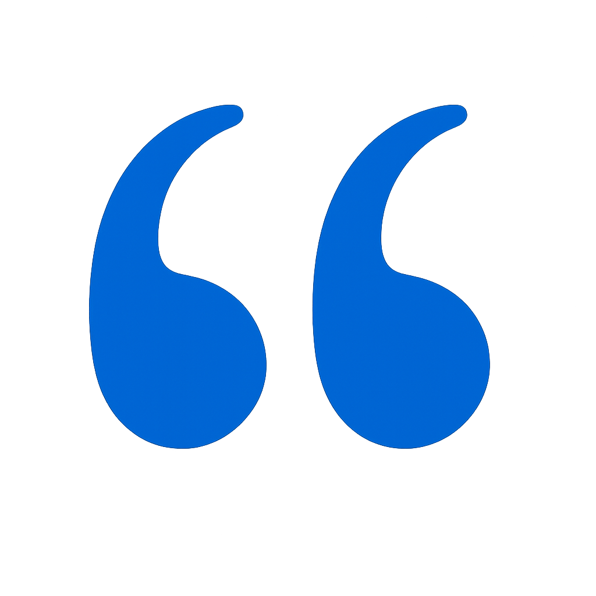

EAT. DRINK. SWIM.
WELCOME TO BLUE WORLD, KANPUR!
Your premier destination for thrilling water adventures and unforgettable aquatic experiences. Dive into fun with our exciting rides, pristine pools, and family-friendly attractions!
Park Info
Rides
Food and Shopping
Past Events
Tickets and Timings

ABOUT US
Located in the heart of Kanpur, our world-class water park and entertainment hub offer thrilling rides, wave pools, lazy rivers, and exciting attractions for visitors of all ages.At Blue World Kanpur, we prioritize safety, cleanliness, and unmatched guest experiences, ensuring every visit is filled with joy and unforgettable memories. Whether you're seeking a family getaway, a fun day with friends, or a refreshing escape from the heat, our park is designed to provide non-stop excitement and relaxation.


SIGN UP FOR SIDCUP NEWS AND SPECIAL OFFERS STRAIGHT TO YOUR INBOX
Excellent couple of hours, relax and enjoy in the fun. Staff were accommodating, friendly and very helpful. Café on site for refreshments etc. Will keep children enterntained during the holidays. Worth a visit if you haven't been.
